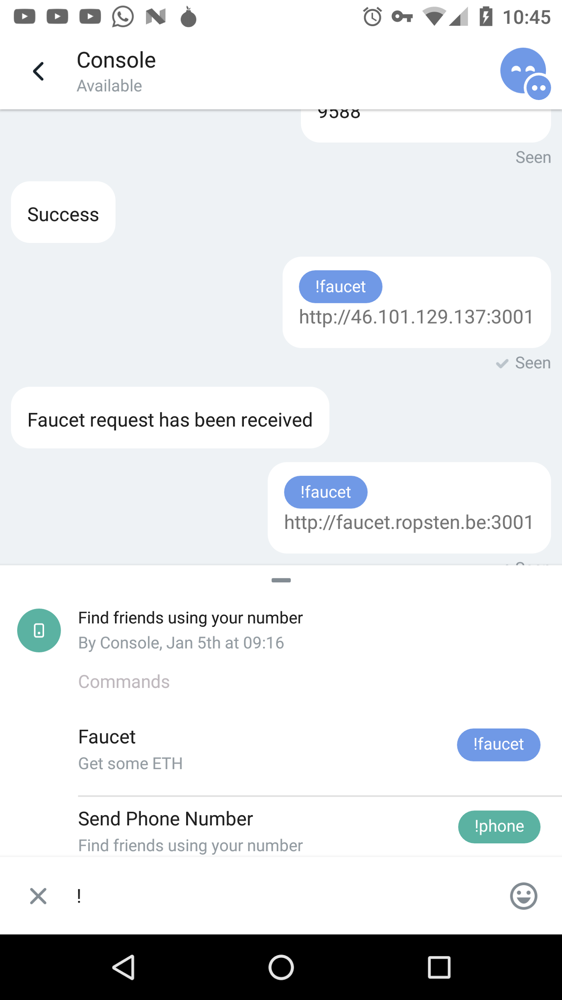
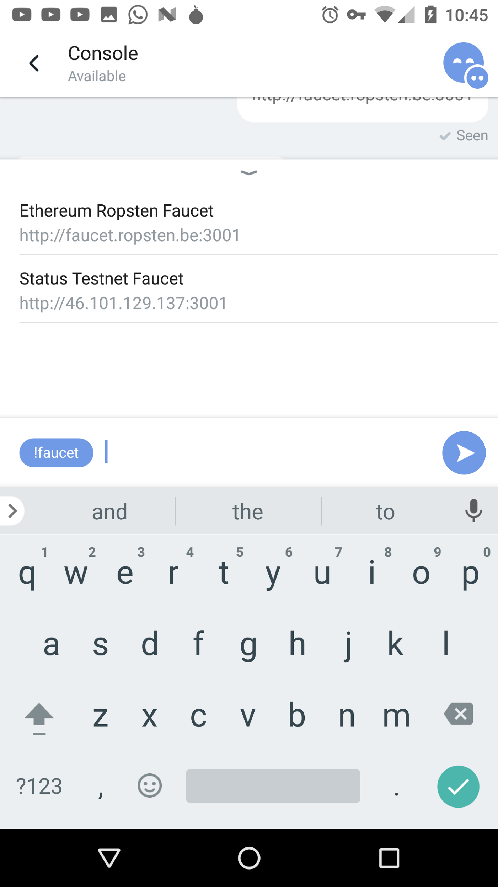
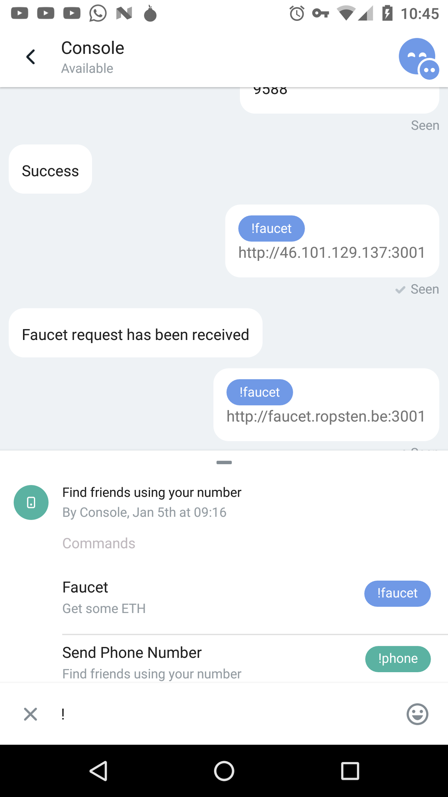
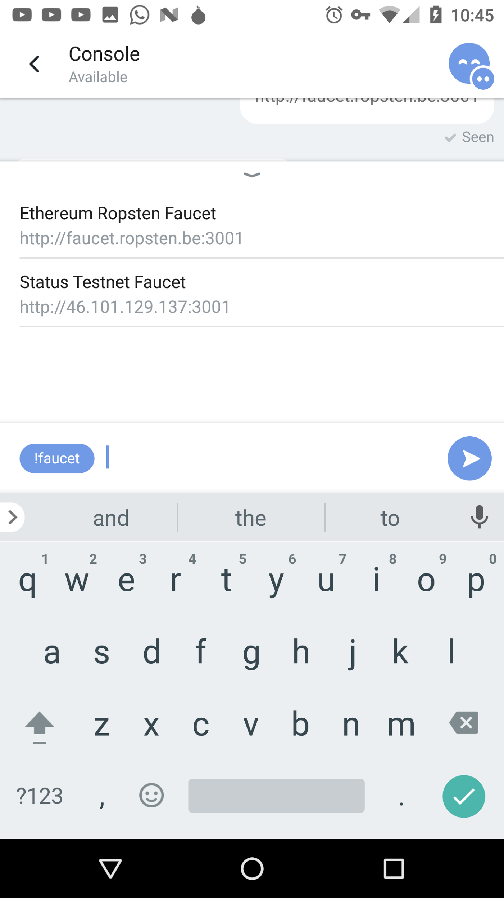
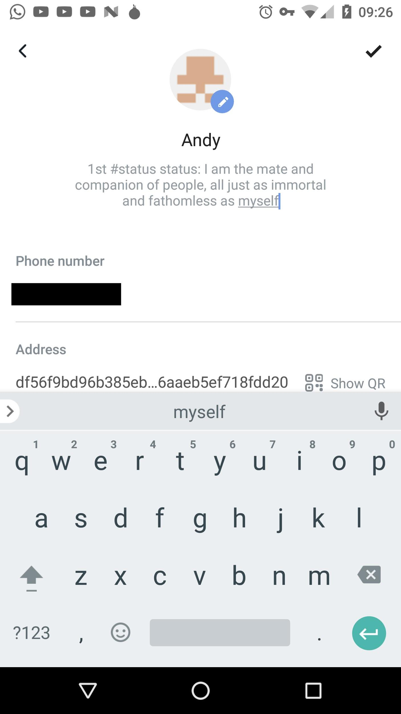
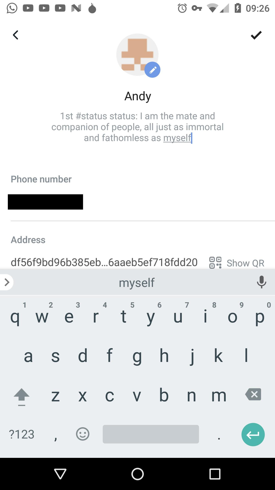
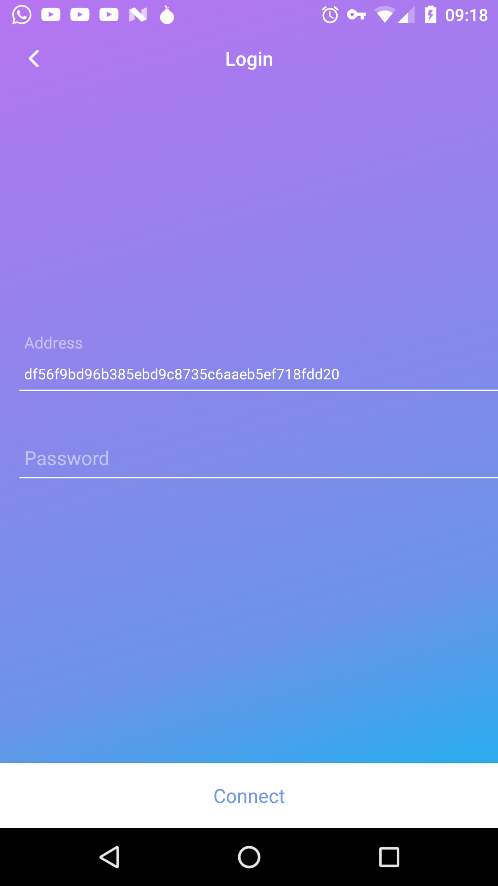
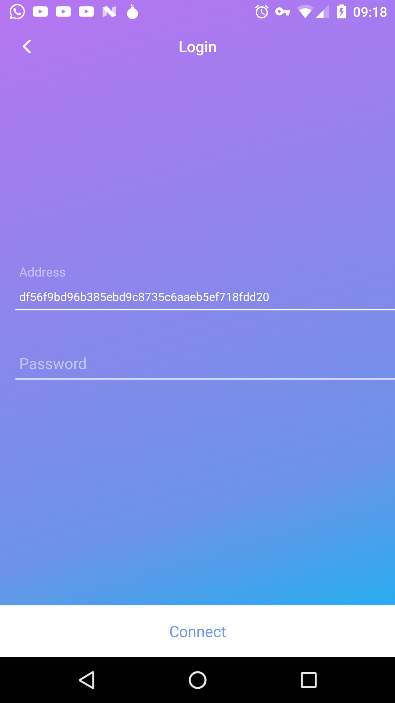

User Guide
Setting It All Up
Special thanks to @cryptowanderer for contributing this fantastic guide!
Welcome to Status! This is Ethereum, anywhere. Ethereum everywhere. A world computer in your pocket. It is so many cool and amazing things that is difficult to know where to start. Being entirely too overwhelmed with the awesomeness that is an Ethereum light client running on your mobile phone, I suppose we’ll just begin at the beginning.
Once you have downloaded the app, installed it and opened it, it should take you into a chat with Console: a dApp that lives inside status and lets you set up your account and control all the important stuff (as well as a bunch of other rad features, which we will get to in good time).
As you can see, I have already been chatting a fair bit with Console (friends, yay!!). The UI concept here is that when someone sends an action message requesting (in this case) a password, or money, or a confirmation code etc., you can tap the blue block and it will insert the appropriate syntax to respond to that request, followed by your input.
One other thing to note is the ‘Available’ beneath ‘Console’ in the top left. This means that my phone has synced with the ropsten testnet (unbelievable right?!). I am running android 7.0 and am doing so over wifi. It took just under 40mins for me to sync, though there are varying reports coming in to our slack depending on phone, OS and network differences. Still, ~40min sync time on a mobile is just insane. Thanks Zsolt for the amazing LES!

You can see that you can optionally give your phone number to help status sync with your existing contacts. This is not mandatory and the app will work fine without it. If you do provide it, please make sure to give your country code (so +27… for me) so that status can send you the confirmation message. Note that if you run into any issues, you can just shake your phone and this should bring up a screen that allows you to submit an error report directly to the status team. You can select from the options what you want to do, but generally it seems best to Report a Problem:


You should be able to select a colour to indicate the severity of the issue on the second screen above. I really want to make sure that Jarrad, Carl and the crew are on their toes, so I have gone for red here. Hitting the forward button (top right) should take you to where the magic really happens:

Please note the Take a screen recording button in the bottom left. This is how the team prefers you to submit bug reports as it is enormously helpful with seeing exactly what went wrong and so providing insight into where to go to fix the issue. You can enter your email, take a video and go ahead and submit. At which point we issue you a massive thank you for being such a stellar alpha tester. Go you!
Actually Using the App
OK, now that we have the setup out the way, we can get into the really fun stuff. Once you have generated your account with Console, you can open both the ropsten testnet faucet and the status test faucet to get some shweet test ether into your account so that you can go out and convince actual people to be your friends too. Please do not open an issue if this doesn’t happen - we can’t convince people to like you (even if you do use the best tech around).
To open both faucets, tap the hamburger menu with the blue dot to the left of the chat box:
 
In words, we tap the menu on the left, scroll down and select the faucet option and then select which testnet we want to get ether from. Repeat this twice to open both faucets and you should get a bit more ether a bit more quickly. Don’t worry about the web3 stuff in the first screenshot - we’ll get to that (who said you can’t build suspense in a technical user guide?).
Seeing as we’re now finished chatting to Console for the moment, we can hit the back button and this will take us into the Chats page:
Here you can see all the lovely people that you have been chatting to. It’s really straightforward and intuitive, so behave as you normally would in WhatsApp or WeChat etc. Tapping a conversation will take you into it, and you can use the bottom three tabs to navigate through the Chats, Discover and Contacts screen. You can also just swipe right. Just do you.
There is another important dApp that lives here as well - your wallet. Selecting it should take you to a screen like this:


The main screen opens what is essentially an in-app browser that will show your main balance. You can scroll that screen down using the small down arrow at the top in the centre to see the actual transactions in a chat-like interface. As you can see, I am super rich - absolutely rolling in that test ether - and have sent some to Jarrad as mad props for building the app, and received some from Roland as a little test.
If you navigate back out of the wallet chat and swipe right, or select the Discover tab at the bottom, you will get to the Discover page:
Here you can see hashtags people are using and discover all the different conversations going on. Swipe right through the cards to see the most popular categories, or scroll down to see the most recent updates. If you want to make a message of your own appear here, you need to open your profile page and edit your status with the hashtag you want to see appear here. Start a meme or hop onto an existing one - it’s all up to you. You can get to your profile page by tapping the little hamburger menu in the very top left of the app:
Don’t stress about the Settings tab - that will be functional in a later release. Your profile page should look like the below. To edit it, hit the three dots in the top right:
 
Tap next to your name to edit that, tap your status to edit that and hit the pencil icon by the picture to upload your own. Remember to include that hashtag if you want it to appear on the Discover page.
Once that is all done and you’ve broadcast a status for all the world to see, swipe right once more (or use the tabs for navigation) and you will get to the Contacts page. Here you will see the dApps that are currently living in status as well as all the wonderful people you have connected with:
These dApps all work in essentially the same way as the wallet - you can open a chat with them, which will direct you to an in app browser that displays whatever is appropriate for that app. There is a small down arrow at the top which you can scroll down to see any transactions that have occurred between you and the dApp. Directly from within status - signed, sealed and delivered, it all just works. Mind-boggling, I know.
If you close your app or otherwise have an issue, when you reopen it, you should be directed to a screen which looks like the below. Select the account that belongs to you (in the case where you set up more than one) and then put in the appropriate password and you should get back to the chat screen:
 
If that doesn’t work for you or your account doesn’t appear like mine, hit the Recover access button at the bottom of the first screen and follow the prompts to input the 12 word passphrase console gave you when you first set stuff up and your password.
Happy sailing!
For the Adventurous
We’ve covered all the basic functionality as it stands, but there is so much more that you can do with status. Most of this stuff will only become available in the beta release or after, but developers around the world should be getting really excited to start building dApps to live alongside Flight Delays and Maker etc.
Though it is by no means complete yet, you can do a lot more than just set you account up using Console - it is, after all, a full dApp of its own. Go back to that chat and type web3. (the fullstop is important) and web3.eth.:

You should be able to see a whole bunch of suggestions for the sorts of things you can do directly from Console, the most basic of which is web3.eth.blockNumber which will return the current block number on the ropsten testnet. If this doesn’t blow your mind, I’m not sure what will. There are, as I said, still improvements to be made here regarding technical things like retaining state between messages, but it will get there.
If you want to dive in even further and help develop the app, contribute some code or otherwise get involved in the technical side of things, here are the links you need:
How to build it: https://wiki.status.im/contributing/development/building-status/
The latest nightlies: http://artifacts.status.im:8081/artifactory/nightlies-local/
If you would like to help us with how to build for Linux and Windows, please do feel free - that would be really awesome to get everyone up to the same speed.